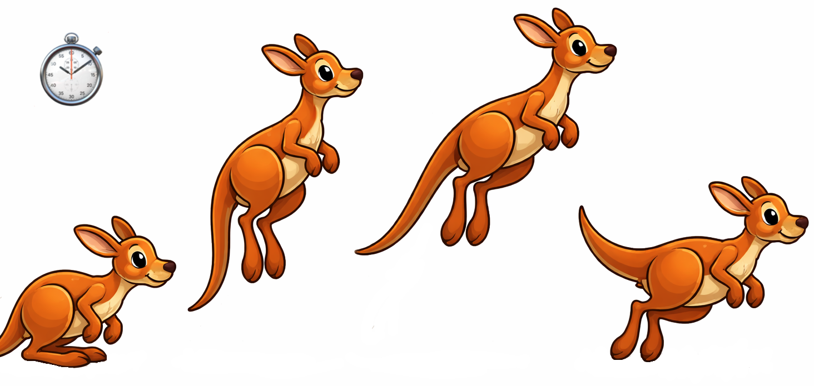
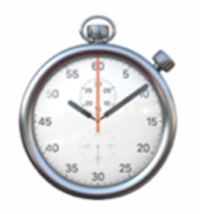

Animationen

Animation – Grundidee
- Animation = zeitliche Veränderung von Grafikobjekten
- Objekte besitzen Zustände (Position, Richtung, Aussehen)
- Zustände werden regelmäßig aktualisiert
- Darstellung erfolgt fortlaufend auf dem Bildschirm
- Ziel: flüssige, kontinuierliche Bewegung
Zeitbasierte Animation
- Animation benötigt eine wiederkehrende Ausführung
- Bewegungen laufen auch ohne Benutzereingaben
- Zeit ist zentraler Steuerfaktor
- Bildwiederholrate beeinflusst Wahrnehmung
- Gleichmäßige Updates → flüssige Animation
🎮 Game Loop
- Zentrale Endlosschleife des Programms
- Besteht aus drei Phasen:
- Eingaben verarbeiten
- Zustand aktualisieren (Update)
- Grafik zeichnen (Render)
- Läuft kontinuierlich
- Blockiert nicht auf Benutzereingaben
Update vs. Rendering
- Update
- Berechnet neue Objektzustände
- Logik, Bewegung, Kollisionen
- Rendering
- Zeichnet aktuellen Zustand
- Keine Logikberechnungen
- Trennung sorgt für Stabilität
- Wichtig für saubere Animationen
⏱️ Bildrate und Zeitsteuerung
- Animation erfolgt in Frames
- Feste Bildrate, z. B. 30 Frames/Sekunde
- Frames per Second = FPS
- Hohe FPS → flüssigere Bewegung
- stellt aber auch höhere Anforderungen an Hardware
- Schwankende FPS können ruckeln
- Zeitsteuerung beeinflusst Genauigkeit
⏱️ Zeitmodelle im Game Loop
- Fester Zeitschritt
- Updates in konstanten Intervallen
- Vorhersagbares Verhalten
- Variabler Zeitschritt
- Update abhängig von vergangener Zeit
- Flexibler, aber weniger stabil
⏱️ Kombiniertes Zeitmodell
- Update mit festem Zeitschritt
- Render mit variabler Frequenz
- Kombination aus Stabilität und Glätte
- Häufig in Spielen eingesetzt
- Gute Kontrolle über Animation
Interpolation
- Überbrückt Zeit zwischen Updates
- Berechnet Zwischenzustände
- Erhöht visuelle Glätte
- Besonders wichtig bei fixem Update
- Betrifft nur Darstellung, nicht Logik
Animation mit Java in JOE
- alle Grafikobjekte erben von
Actor-Klasse- u.a. Rectangle, Polygon, Triangle
- Jedes Objekt besitzt eine
act()-Methodeact()wird automatisch aufgerufen
- Default: 30 FPS
- Grundlage für Objektanimation
Die act()-Methode
- Wird vom Framework gesteuert
- Enthält Animations- und Bewegungslogik
- Entwickler überschreiben die Methode
- Zustandsänderungen pro Frame
- Keine direkte Zeichenlogik
Typische Aufgaben in act()
- Position verändern
- Geschwindigkeit anwenden
- Richtungen anpassen
- Zustände wechseln
- Einfache Kollisionen prüfen
⌨️ Beispiel für act()
📋 Anforderungen an Animationscode
- Keine Endlosschleifen in
act() - Kurze, schnelle Berechnungen
- Zustandsänderung pro Aufruf
- Trennung von Logik und Darstellung
- Anpassung an feste Update-Frequenz
⌨️ Tastatur-Steuerung
Tastatur-Ereignisse in JOE
- Tastatur-Eingaben sind ereignisgesteuert
- Methoden reagieren auf bestimmte Tastaturaktionen
- Übergabe der betroffenen Taste als
String - Ereignis-Handler werden überschrieben
onKeyDown(String key)- wenn Taste
keygerade heruntergedrückt wurde
- wenn Taste
onKeyUp(String key)- wenn Taste
keygerade losgelassen wurde
- wenn Taste
onKeyTyped(String key)- wenn
keyangeschlagen (heruntergedrückt + losgelassen) wurde
- wenn
- Unterschied
onKeyUpundonKeyTyped:- beim längeren Halten einer Taste können viele
OnKeyTyped-Ereignisse ausgelöst werden, aber nur einOnKeyUp-Ereignis
- beim längeren Halten einer Taste können viele
⌨️ Beispiel für Tastatur-Aktionen
✅ Zusammenfassung
- Animation basiert auf Zeit und Wiederholung
- Game Loop ist zentrale Steuerung
- Trennung von Update und Rendering ist entscheidend
act()ermöglicht objektbezogene Animation- Saubere Zeitsteuerung → flüssige Grafik
- 🚀 Mehr dazu im nächsten Praktikum
